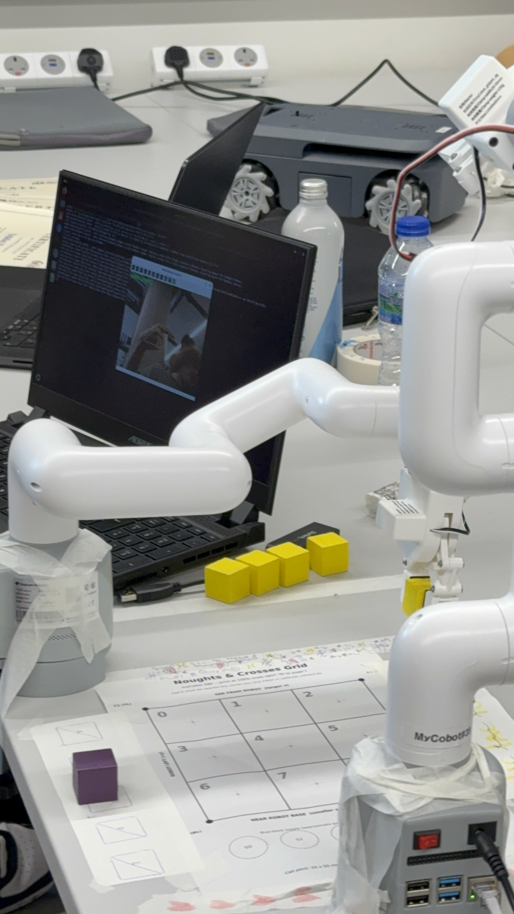

Computer Vision Robot Arm
View Code ↗Collaborated with a team of UCL students to develop a robotic noughts and crosses game in which a player competed against an AI using two physical robot arms.
My primary contribution was the player interaction system. I developed a computer vision pipeline that used a laptop camera to track the player's arm movements and translate them into commands sent to a Raspberry Pi, allowing the robotic arm to place coloured blocks onto the game board.
The opposing robot arm was developed by other members of the team and was controlled by an LLM, which analysed the board state, determined its next move, and autonomously played against the user.
